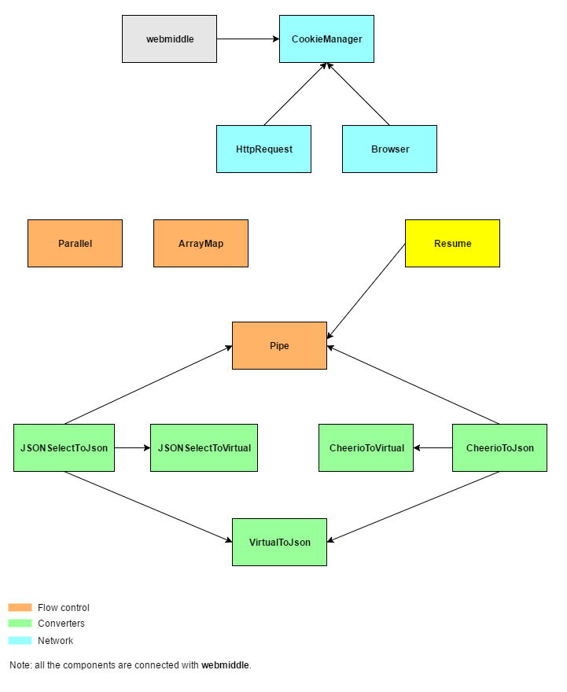

Documentation
Learn how to use the framework effectively.
Packages

| Name | Description |
| webmiddle |  |
| webmiddle-manager-cookie |  |
| webmiddle-component-pipe |  |
| webmiddle-component-parallel |  |
| webmiddle-component-arraymap |  |
| webmiddle-component-resume |  |
| webmiddle-component-http-request |  |
| webmiddle-component-browser |  |
| webmiddle-component-cheerio-to-virtual |  |
| webmiddle-component-jsonselect-to-virtual |  |
| webmiddle-component-virtual-to-json |  |
| webmiddle-component-cheerio-to-json |  |
| webmiddle-component-jsonselect-to-json |  |
| webmiddle-server |  |
| webmiddle-client |  |
Previous: evaluate
Next: Example: News Search